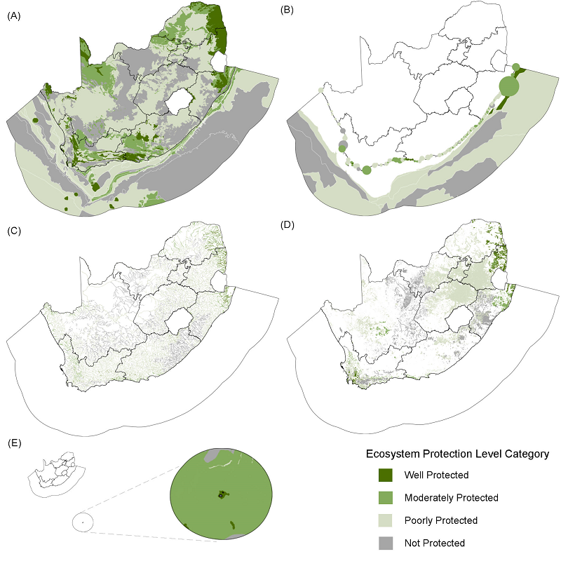
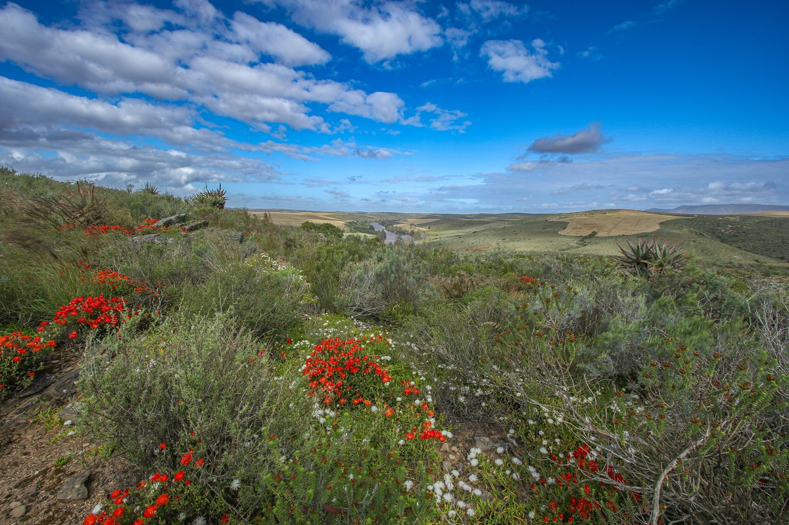

Ecosystem threat status
Ecosystem threat status is an indicator of the degree to which ecosystems are still intact or alternatively losing vital aspects of their structure, function or composition. The IUCN Red List of Ecosystems (RLE) framework uses the concept of ecosystem collapse as the end point for ecosystem decline. For NBA 2025 the RLE framework was applied across all realms, where in previous NBAs the South African threat status framework (developed prior to the IUCN RLE) was applied for some realms. Ecosystem types are placed into one of four categories: Critically Endangered (CR), Endangered (EN), Vulnerable (VU) and Least Concern (LC); where CR, EN and VU together make up the threatened categories. The categories are based on assessments of quantitative and qualitative criteria (and thresholds) linked to ecosystem extent, ecological condition and threatening processes. Read more about the indicator here.
Wetland, river and estuarine ecosystems are threatened, with over half of the ecosystem types and ecosystem extent of rivers and wetlands listed as Critically Endangered, Endangered or Vulnerable; while for estuaries these figures are over 75% (Figure 1). This reflects the poor ecological condition of wetland, river and estuarine ecosystems that are overwhelmed by a variety of compounding pressures, particularly, increasing disruptions to the hydrological regime and deteriorating water quality, with fishing being an additional pressure in estuaries. Similarly high levels of pressure are evident on the coast, with 71% of ecosystem types being threatened, comprising almost half of the coastal extent. In contrast, a relatively large proportion of marine and terrestrial ecosystem types are listed as Least Concern. This is in part due to the relatively low pressure on some ecosystem types (e.g., abyssal or remote mountain ecosystem types) and due to inadequate data on pressures in utilised ecosystem types (e.g., marine pelagic fishing and grazing pressures in rangelands). Ecosystem assessments are updated periodically, and new information and methods of measuring risk of ecosystem collapse will inform future assessments.

Generally, ecosystem types with a limited distribution tend to be more highly threatened than extensive types – this is evident when Figure 1 A and B are compared. In the marine realm, the larger remote offshore ecosystem types are generally less threatened than the smaller inshore ecosystem types; in the terrestrial realm the large ecosystem types of the Nama-Karoo are less threatened than the many small types in the Fynbos Biome (Figure 2 A). The Eastern Cape estuaries (specifically along the Wild Coast) are less threatened than those on the Cape West Coast and southern KwaZulu-Natal (Figure 2 B), reflecting the condition of their catchments and lower coastal development. The rivers of northern KwaZulu-Natal, Lowveld and Succulent Karoo are generally less threatened than other regions of the country (Figure 2 C). Wetlands of the interior Highveld, along the Escarpment and the southwestern Cape are the most threatened (Figure 2 D). In the marine realm, the Southern Benguela ecoregion has more threatened ecosystems than the Agulhas ecoregion, and most of the threatened ecosystem types in the Natal–Delagoa ecoregion are concentrated in the KwaZulu-Natal Bight (Figure 2 A).
Ecosystem protection level
Ecosystem protection level measures the degree to which ecosystem types are represented in the protected area network. The indicator was developed in South Africa and has been used as a headline indicator in national reporting since 2005. Ecosystem types are assigned to one of four categories based on a set of predefined targets ranging from 16 to 32% (linked to the extent and condition of types within protected areas). Well Protected (WP) ecosystem types are those where the extent target is met or exceeded within the protected area network, Moderately Protected (MP) types are those with between 50 and 99% of their target within the protected area network, Poorly Protected (PP) types have between 5 and 49% of their target within the network, and types with less than 5% of their target within the protected area network are categorised as Not Protected (NP). Read more about the indicator here.
Wetlands and rivers have the lowest overall protection levels of any realm, with over 80% of ecosystem types categorised as Poorly Protected or Not Protected (referred to as under-protected) (Figure 3). This is driven in part by the poor ecosystem condition of many freshwater ecosystems (only intact or moderately modified ecosystem extent contributes fully to the ecosystem targets). A high proportion of estuarine ecosystem types have some level of protection, but very few are considered Well Protected. Protecting estuaries is challenging, given the range of pressures that can impact them directly and their upstream catchment areas. Marine protection improved dramatically in 2018/2019 with the declaration of 20 new Marine Protected Areas – this translates into higher levels of protection within the marine realm when compared to the terrestrial realm. The marine realm has a small number of large ecosystem types that are under-protected and this results in a difference between the percentage of types in each category (Figure 3) and the extent of each category (Figure 3).

The spatial patterns of protection level reflect the geography of the protected area network: terrestrial ecosystem types around large national parks (e.g., Kruger National Park in the northeast of the country) are Well Protected (Figure 4 A). Under-protected regions on the mainland include the grasslands of the Free State and interior of the Eastern Cape, and the Nama Karoo. Other gaps in the protected area network are evident in the offshore eastern portion of the marine realm, the southern Eastern Cape coast and the Northern Cape coast (Figure 4 A, B). Most coastal ecosystem types are represented in protected areas, although only a quarter of the extent is Well or Moderately Protected. The Prince Edward Islands Marine Protected Area in South Africa’s subantarctic territory provides protection to most ecosystem types, with almost half the types being Well Protected, however, these comprise a small portion of the territory (Figure 4 E).

Intersecting threat status and protection level
The headline indicators of the NBA provide information on the pressures faced by species and ecosystems and on the progress made in protecting them. Combining the indicators provides an additional perspective on the status of South Africa’s biodiversity.
The outputs of spatially explicit ecosystem assessments, as conducted in the NBA, can provide an initial indication of priority ecosystem types by intersecting the results of ecosystem threat status and protection level. Ecosystem types that are highly threatened (Critically Endangered or Endangered) but under-protected (Not Protected or Poorly Protected) can be considered to be in urgent need of conservation action (Figure 5). Priority ecosystem types could need additional protection, focussed management intervention or could be restoration priorities.

In the marine realm, 17% (27/163) of ecosystem types are both highly threatened and under-protected, prevalent on the West Coast, the western Agulhas Bank shelf edge and parts of the Kwazulu-Natal Bight.
A quarter of terrestrial ecosystem types (115/463) are highly threatened and under-protected. The Fynbos Biome and Namaqualand contain many Critically Endangered and under-protected ecosystem types while the grasslands of the interior and the Indian Ocean Coastal Belt have many Endangered and under-protected types.
Over a third of river ecosystem types (82/222) and a third of wetland types (29/82) are highly threatened and under-protected. Lowland river ecosystem types and depression wetlands have the highest proportion of types in this combined threat and protection category.
A third of estuarine ecosystem types (7/22) are highly threatened and under-protected. Each of the four biogeographical regions have ecosystem types that are highly threatened and under-protected.
For the coast, over a third of ecosystem types (68/190) are highly threatened and under-protected.
